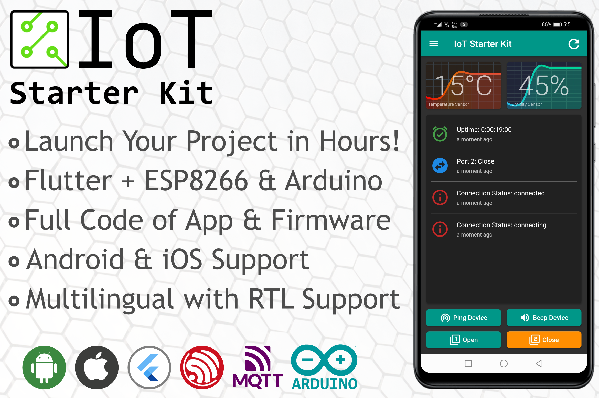
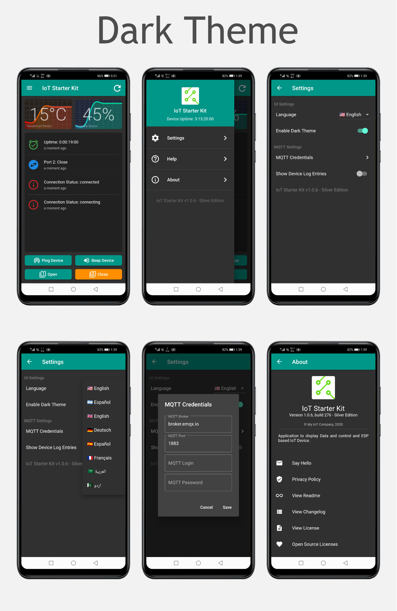
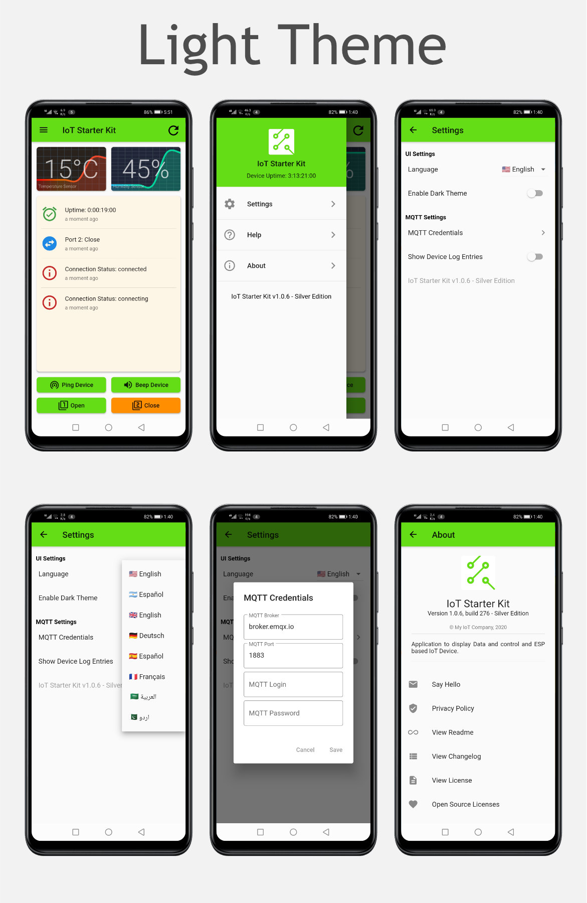
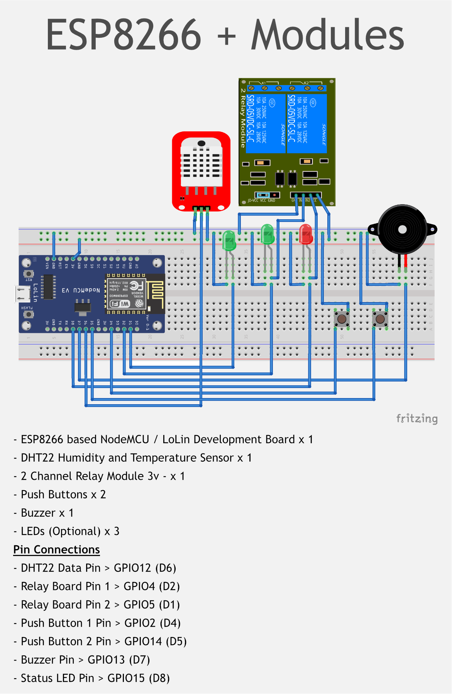
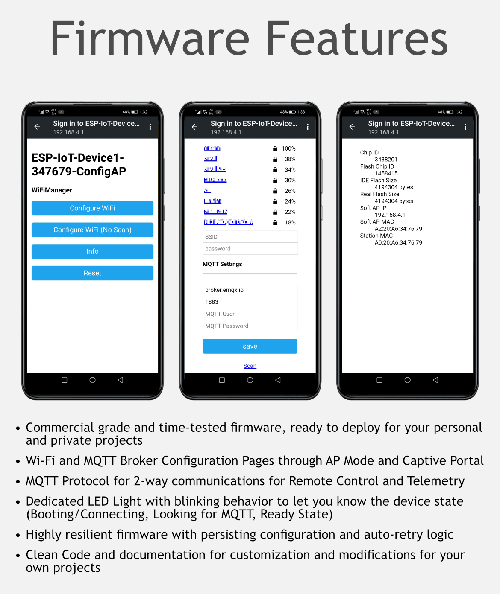

Welcome to ESP IoT Starter Kit Documentation
For updated documentation please visit the Documentation Site.
General Information
ESP IoT Starter Kit Version: 1.0.x
Documentation Version: 1.0
Created: 25/11/2020
Created by: Orison Technologies
- Need Advice? Send message through Contact Form
- Need Help? Open support ticket in our Github Repo
- Thank you for purchasing our project. If you have any questions that are beyond the scope of this documentation, please feel free to open support ticket in our support forum.
Thank you!
Project Overview

Flutter ESP8266 IoT Starter Kit is a starter project for freelancers, indie developers, and hobbyists. This project includes source code for a simple Flutter application which can target Android, iOS as well as other platforms which are supported by Flutter, and a robust C++ based firmware for Arduino/ESP8266 devices. The firmware can be adopted on many Arduino boards as well as ESP32 with minor Pin-level changes.
The aim of this project is to enable the developers to quickly launch their IoT project with custom branded apps for themselves or their customers. The codebase for the app and firmware can be used as a starting point (A starter Template) for your own project, as you can add more functionality to the main app and the device without having to worry about core features like App Settings, Multilingual Support, light and dark themes, and MQTT Communication.
Same is true for the ESP firmware, the firmware is a time-tested codebase, which we have used in our own commercial-grade projects for years, and this can be used as a base project for adding functionality without tangling yourself in features like Easy Wi-Fi Onboarding, Device Settings, Retry-to-Connect logic as well as MQTT Communications.
The app and the firmware by default use a public MQTT broker (as a demo) without any authentication to send commands to the device and receive command responses and data. The MQTT broker settings and credentials can easily be updated in the app as well as the ESP device without having to compile the app or the firmware.
Mobile App Features
- Designed in Flutter, one of the best cross-platform mobile development framework backed by Google and a great open-source community
- Flutter app can be natively complied to target all major platforms including: Android, iOS, Windows Linux, MacOS and Raspberry Pi
- Clean code which can be easily customized and branded for your own projects
- Dark and Light mode support
- Streamlined multilingual implementation and selection through Settings page
- Settings screen with save and load implementation
- App can used as a Flutter Project Starter Template (Settings, Splash, Dark Theme, Multilingual etc.)

The Screens Included with apps are:
- Splash Screen
- Main Screen with Data Graphs, Event Log, and Drawer Menu
- About Screen with all necessary sub screens (Readme, License, Privacy Policy, Contact)
- Settings Screen with additional dialog for MQTT Settings
- Help Screen driven by Markdown based content to easily ship app documentation

ESP Firmware Features
- Commercial grade and time-tested firmware, ready to deploy for your personal and private projects
- Wi-Fi and MQTT Broker Configuration Pages through AP Mode and Captive Portal
- MQTT Protocol for 2-way communications for Remote Control and Telemetry
- Dedicated LED Light with blinking behavior to let you know the device state (Booting/Connecting, Looking for MQTT, Ready State)
- Highly resilient firmware with persisting configuration and auto-retry logic
- Clean Code with comments and documentation for customization and modifications for your own projects


Extended Licence Guideline
As per Envato rules, you must purchase this app under and EXTENDED LICENCE in either one of the following case:
- You plan to publish your own version of this template as a PAID app on the App store or Google Store
- You Plan to add In-App purchase to your own version of this app - which means your user will still get charged of money even if your app is available for free on the App/Play Store.
- You plan to sell the LIVE version of you app Envato, or similar market-places. Please Note that you are not allowed to resell the original source code you bought here on Envato. what mentioned above is only the LIVE app on the App/Play Store.
Project Layout
.ZIP File Name: ESP-IoT-Starter-Kit-v1.0.1
iot_starter_kit_app/ # This folder contains the code for Flutter App.
ESP-IoT-Starter-Kit-Firmware/ # This folder contains the code for ESP Firmware.
ESP-IoT-Starter-Kit-Documentation/ # This documentation folder
index.html # The documentation homepage.
... # Other HTML pages, images and other files.